La multiplicación
Continúamos con la multiplicación.
Recordemos que la multiplicación está en relación con la suma, y que esta hace que sea más fácil y rápido sumar cantidades muy grandes haciendo grupos. Las tablas de multiplicar nos muestran los resultados de forma rápida, por eso es tan importante aprenderlas de memoria, esto ayudará a que puedas hacer cálculos de forma más veloz.
- ¿Qué vamos a aprender en esta segunda parte?
- La relación entre la suma y la multiplicación
- Las tablas del 4, 5 y 6
(1)La relación entre la suma y la multiplicación
Como ya lo mencionamos anteriormente para aprender a multiplicar solo es necesario saber sumar, es por esto que es muy importante que entendamos cómo funciona la multiplicación y las tablas de multiplicar.
Observa:
Las tablas de multiplicar nos muestran los resultados de cuánto nos daría si sumaramos un determinado número de elementos que están repartidos en un determinado número de grupos.
Vamos a verlo con la tabla del 4:
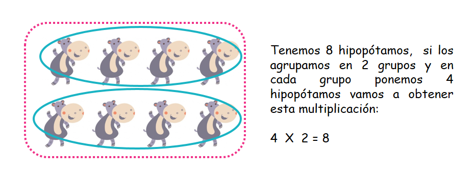 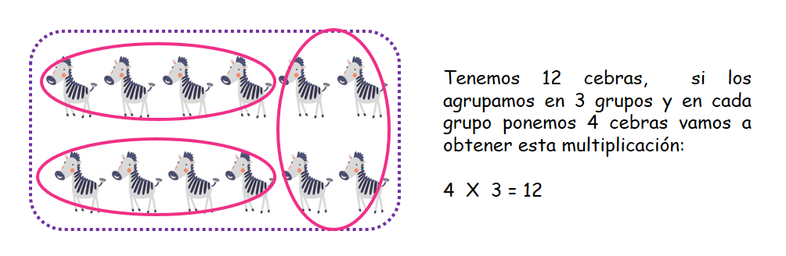 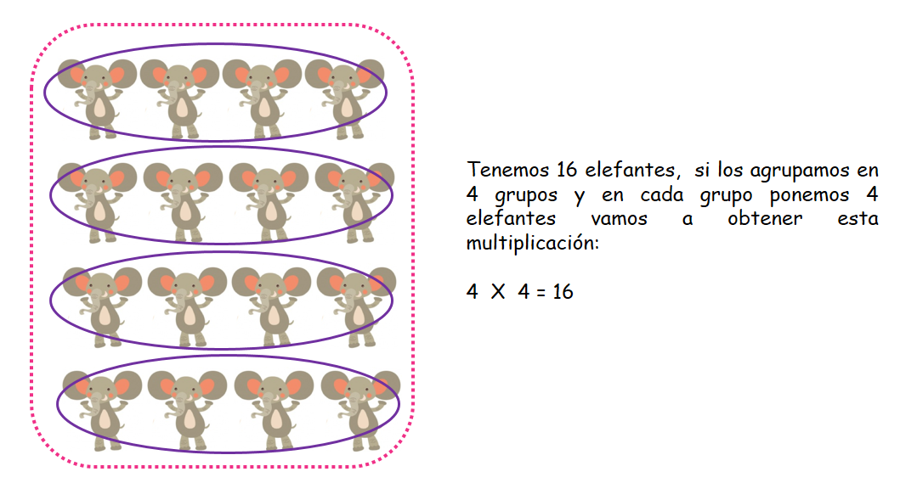¿Has visto como la tabla del 4 nos indica el resultado del número de elementos agrupados en grupos X el número de grupos? Observa que siempre en las agrupaciones deben ir el mismo número de elementos, es decir en cada grupo que hacemos debemos tener el mismo número de cosas. Cuando trabajas con la tabla del 4 estas trabajando con grupos en los cuales hay 4 elementos.
Ahora vamos a verlo con la tabla del 5.
Observa:
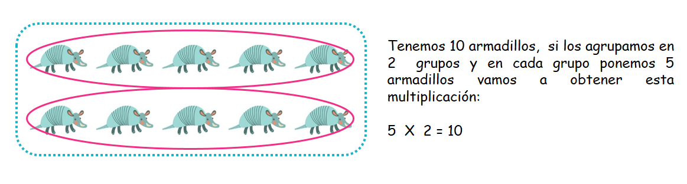 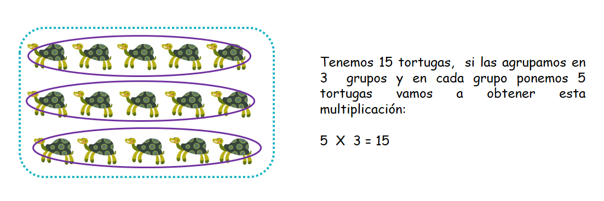 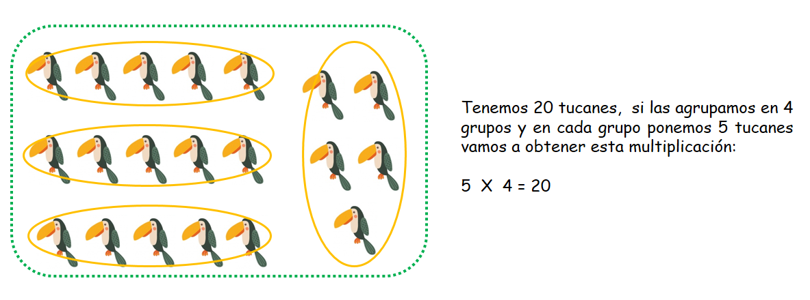La tabla del 5 nos muestra los resultados de agrupaciones de 5 en 5 con diferentes números de grupos, observa que cuando trabajas con la tabla del 5 siempre hacemos grupos con 5 elementos ¡es sencillo! ¿Verdad?
Ahora vamos a verlo con la tabla del 6.
Observa:
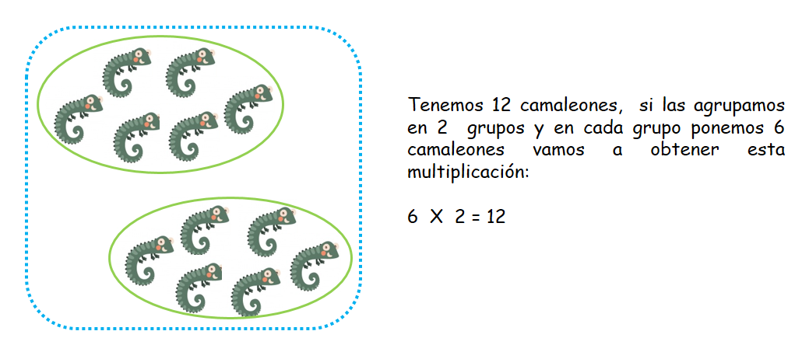 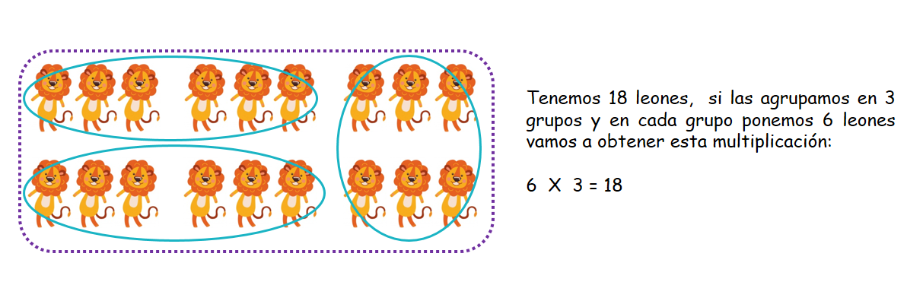 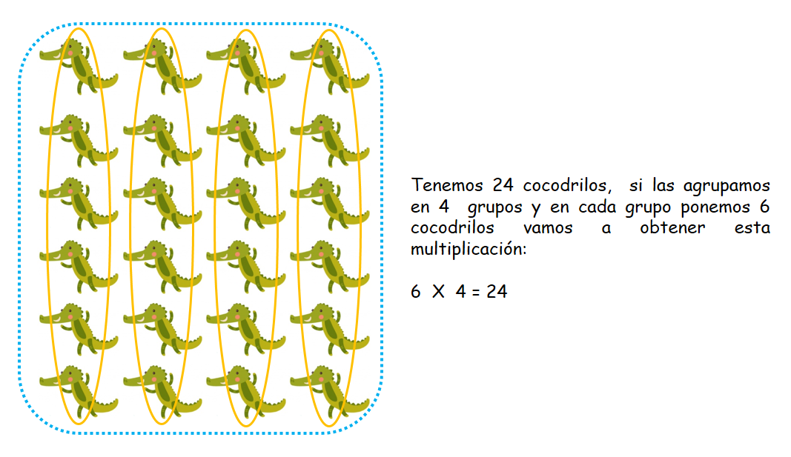Como puedes ver en las imágenes, cuando trabajamos con la tabla del 6 estamos trabajando con grupos dentro de los cuales hay 6 elementos, a medida que avanzas en la tabla del 6 vas a observar que siempre se suma de 6 en 6.
(2)Las tablas de multiplicar del 4 al 6:
A. La tabla del 4:
Tip: Para aprenderte los resultados de la tabla del 4 solo debes contar de 4 en 4.
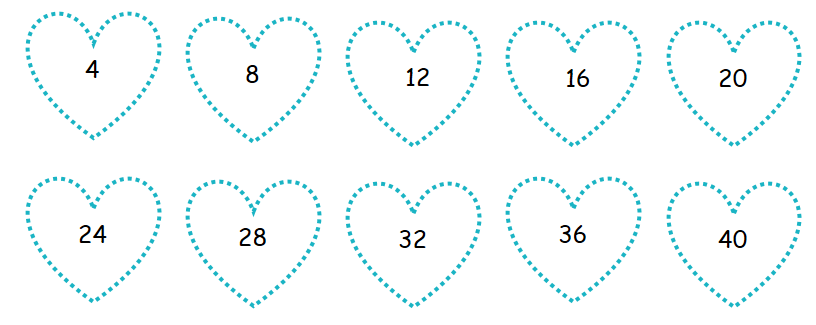 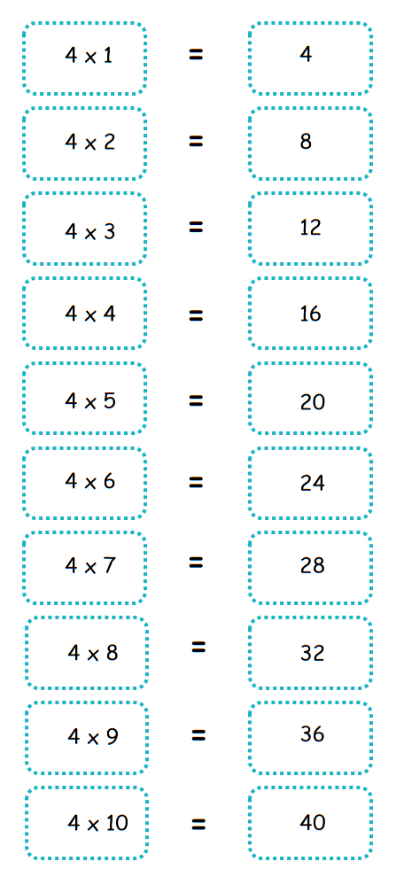B. La tabla del 5:
Tip: Para aprenderte los resultados de la tabla del 5 solo tienes que contar de 5 en 5.
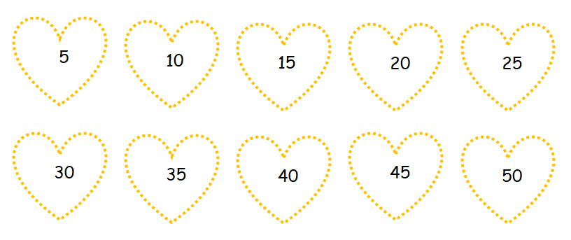 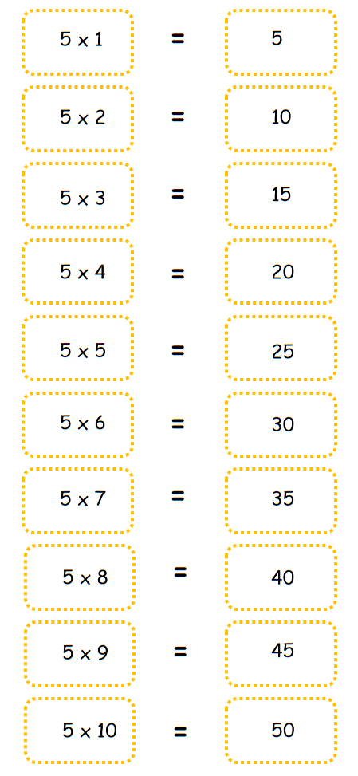B. La tabla del 6:
Tip: Para aprenderte los resultados de la tabla del 6 solo debes contar de 6 en 6.
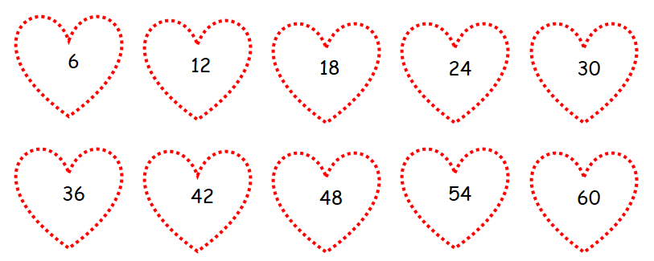 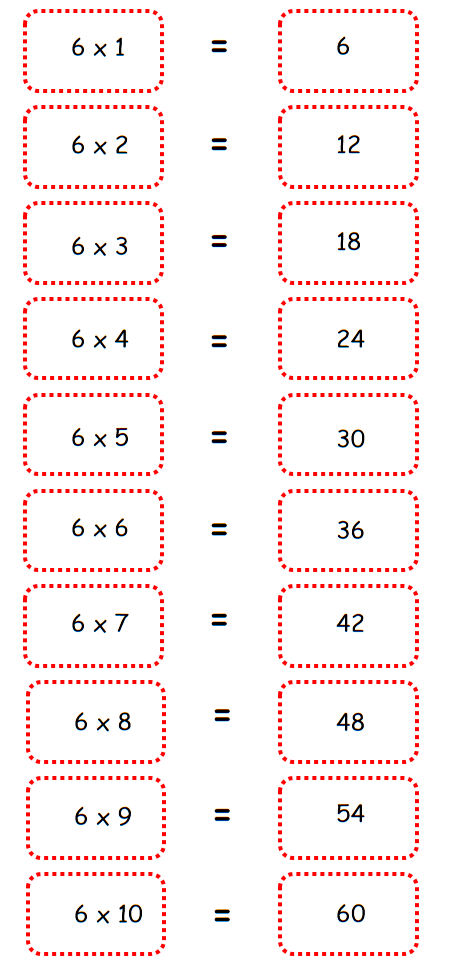Material extra para trabajar el tema de la multiplicación:
En el siguiente enlace podrás descargar un cuadernillo de trabajo con ejercicios variados sobre las tablas de multiplicar creado por edufichas.com.
Dando click en este enlace podrás descargar un pdf con puzzles sobre las tablas de multiplicar creado por edufichas.com.
En este enlace encontrarás un cuadernillo completo con ejercicios de cada tabla de multiplicar del 1 al 10 creado por materialparamaestros.com.
Vídeo orientativo::
En estos vídeos encontrarás una explicación muy clara sobre trucos para aprenderse la tabla del 4, la tabla del 5 y la tabla del 6 creados por Guíainfantil.com.